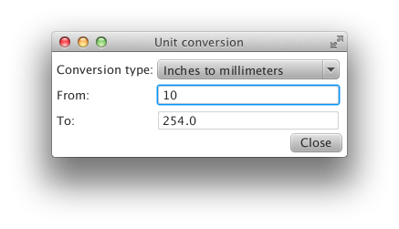
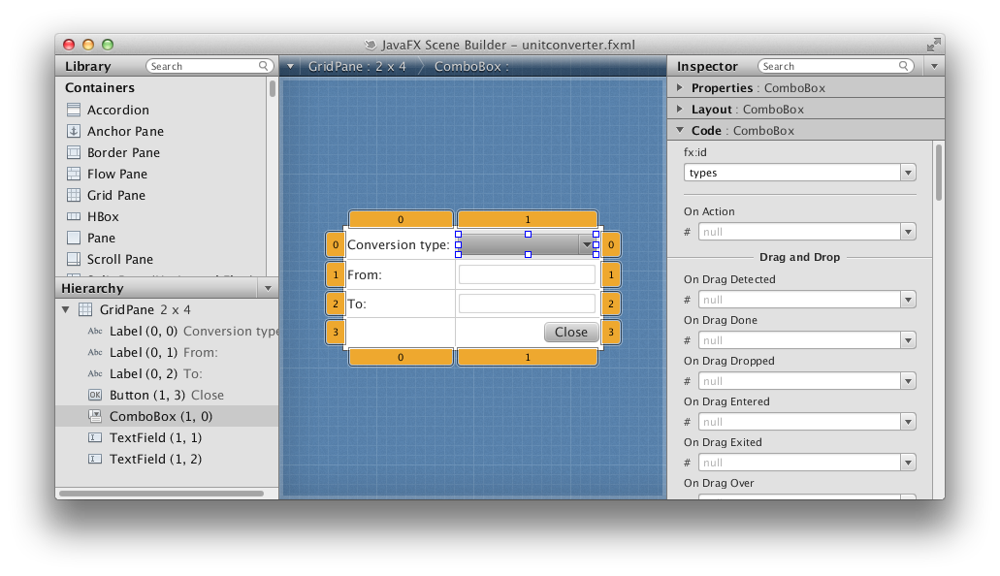

ScalaFX with FXML
ScalaFX is a nice wrapper around JavaFX for Scala, but currently it lacks support for using FXML instead of Scala code for defining the user interfaces. This can be understood as ScalaFX is in fact a DSL for defining the UI in Scala instead of an XML file. Still I believe that using FXML instead may have its advantages; first of all it has a visual designer (JavaFX Scene Builder). For me, designing an UI without immediate visual feedback is hard, and involves a lot of iterations of tweaking the code, running it and checking the results. I also expect that in the future there will be more tools available which work on FXML data.
It is not impossible to use FXML user interfaces from Scala, but the ScalaFX wrappers does not help and the code for the controller classes is not clean enough. See the following example to get a feeling how it looks like.
To make it better I wrote a small library called ScalaFXML. In this post I’ll go through a small example to explain how it works.
The following image shows how our sample application will look like:

The From fiels is editable, and the result in the To field is filled as you type using data binding. The Close button’s only purpose is to demonstrate event handlers.
The conversion logic itself is implemented by small classes sharing the same trait:
trait UnitConverter {
val description: String
def run(input: String): String
override def toString = description
}
object MMtoInches extends UnitConverter {
val description: String = "Millimeters to inches"
def run(input: String): String =
try {
(input.toDouble / 25.4).toString
} catch {
case ex: Throwable => ex.toString
}
}
object InchesToMM extends UnitConverter {
val description: String = "Inches to millimeters"
def run(input: String): String =
try {
(input.toDouble * 25.4).toString
} catch {
case ex: Throwable => ex.toString
}
}To describe the set of available unit converters, we define one more helper class:
class UnitConverters(converters: UnitConverter*) {
val available = List(converters : _*)
}Now let’s start with a pure ScalaFX solution, where the user interface is defined in Scala. I’ve implemented the view itself in a class called PureScalaFXView, which gets the set of available unit converters as a dependency through its constructor. This makes the main application object very simple:
object PureScalaFX extends JFXApp {
stage = new PureScalaFXView(
new UnitConverters(InchesToMM, MMtoInches))
}The PureScalaFXView class consists of two distinct parts. First we define the user interface using the ScalaFX UI DSL:
class PureScalaFXView(converters: UnitConverters) extends JFXApp.PrimaryStage {
// UI Definition
title = "Unit conversion"
private val types = new ComboBox[UnitConverter]() {
maxWidth = Double.MaxValue
margin = Insets(3)
}
private val from = new TextField {
margin = Insets(3)
prefWidth = 200.0
}
private val to = new TextField {
prefWidth = 200.0
margin = Insets(3)
editable = false
}
scene = new Scene {
content = new GridPane {
padding = Insets(5)
add(new Label("Conversion type:"), 0, 0)
add(new Label("From:"), 0, 1)
add(new Label("To:"), 0, 2)
add(types, 1, 0)
add(from, 1, 1)
add(to, 1, 2)
add(new Button("Close") {
// inline event handler binding
onAction = (e: ActionEvent) => Platform.exit()
}, 1, 3)
columnConstraints = List(
new ColumnConstraints {
halignment = HPos.LEFT
hgrow = Priority.SOMETIMES
margin = Insets(5)
},
new ColumnConstraints {
halignment = HPos.RIGHT
hgrow = Priority.ALWAYS
margin = Insets(5)
}
)
}
}This is not 100% pure UI definition, because it also contains an inline event handler definition for the Close button.
The next part fills the combo box and defines the data binding. Filling the combo box is a simple procedural loop:
for (converter <- converters.available) {
types += converter
}
types.getSelectionModel.selectFirst()For the data binding we define a low level data binding which depends on the combo box’s selected value and the From field’s text, and produces the output for the To field:
to.text <== new StringBinding {
bind(from.text.delegate, types.getSelectionModel.selectedItemProperty)
def computeValue() = types.getSelectionModel.getSelectedItem.run(from.text.value)
}That’s all, the application is fully functional. The next thing is to split this class so the UI definition and the UI logic got separated. This refactored ScalaFX solution is very similar to the previous one, but the initialization of the combo box, the data binding and the event handler are all encapsulated by a new, separate class:
class RawUnitConverterPresenter(
private val from: TextField,
private val to: TextField,
private val types: ComboBox[UnitConverter],
private val converters: UnitConverters) {
// Filling the combo box
for (converter <- converters.available) {
types += converter
}
types.getSelectionModel.selectFirst()
// Data binding
to.text <== new StringBinding {
bind(from.text.delegate, types.getSelectionModel.selectedItemProperty)
def computeValue() = types.getSelectionModel.getSelectedItem.run(from.text.value)
}
// Close button event handler
def onClose(event: ActionEvent) {
Platform.exit()
}
}What I wanted is to be able to define the controller class exactly like this while building the user interface from FXML. Without ScalaFXML the controller class have some serious limitations:
- It must implement the Initializable interface
- It cannot have any constructor arguments
- The user interface objects must be variable fields of the class
- And they have to have the type of the JavaFX controls, so to be able to use the ScalaFX wrappers, they have to be explicitly wrapped in the
initializemethod.
With ScalaFXML the process is really simple. First we create the FXML, for example with the JavaFX Scene Builder:

In the FXML we give the from, to, and types identifiers to our controls using the fx:id attribute, for example:
<TextField fx:id="from" prefWidth="200.0"
GridPane.columnIndex="1"
GridPane.margin="$x1"
GridPane.rowIndex="1" />The event handlers can be specified simply by their name:
<Button onAction="#onClose" text="Close"
mnemonicParsing="false"
GridPane.columnIndex="1"
GridPane.halignment="RIGHT"
GridPane.rowIndex="3" />and the controller class must be referenced on the root node
fx:controller="scalafxml.demo.unitconverter.UnitConverterPresenter"The controller class can be exactly the same as the RawUnitConverterPresenter, adding an additional @sfxml annotation for it. Everything else is handled by the library, as we will see.
The application object itself looks like this:
object ScalaFXML extends JFXApp {
val root = FXMLView(getClass.getResource("unitconverter.fxml"),
new DependenciesByType(Map(
typeOf[UnitConverters] -> new UnitConverters(InchesToMM, MMtoInches))))
stage = new JFXApp.PrimaryStage() {
title = "Unit conversion"
scene = new Scene(root)
}
}Beside giving the URI for the FXML file we also has to provide the additional dependencies of the controller class. This is an easily extensible part of the library, and it already has support for SubCut and Guice as well. Here we are using a simple type->value mapping instead.
How does this work? What happens behind the scenes?
The @sfxml is a macro annotation. In compile-time, the class definition itself is transformed by the sfxmlMacro.impl function.
The transformation’s result is a class definition with the source class’ name, but with a completely different content. The original class is added as an inner class, always called Controller. In our example, the generated class definition would look like something similar:
class UnitConverterPresenter(private val dependencyResolver: ControllerDependencyResolver)
extends javafx.fxml.Initializable
with FxmlProxyGenerator.ProxyDependencyInjection {
class Controller(
private val from: TextField,
private val to: TextField,
private val types: ComboBox[UnitConverter],
private val converters: UnitConverters) {
// …
}
private var impl: Controller = null
// …
} The class have four distinct parts:
- Getting the additional dependencies from the dependency resolver
- Variable fields for binding the JavaFX controls defined in the FXML
- Event handler methods
- The
initializablemethod’s implementation
The first one is simple - for each constructor argument of the controller class which is not a ScalaFX control, we query the dependency resolver to get a value for it. These are performed when the outer, generated class is instantiated and stored through the ProxyDependencyInjection trait.
The variable fields are simple fields for all the ScalaFX constructor arguments of the controller class, but converted to their JavaFX counterpart. For example the generated field for the controller’s from argument will look like this:
@javafx.fxml.FXML
private var from: javafx.scene.control.TextField = nullThe event handler’s are proxies for all the public methods of the controller, but the ScalaFX event argument types are replaced with JavaFX event argument types and they are wrapped automatically when forwarding the call to the real implementation. For the onClose event handler it would look like the following:
@javafx.fxml.FXML def onClose(e: javafx.event.ActionEvent) {
impl.onClose(new scalafx.event.ActionEvent(e))
}When JavaFX calls the generated controller’s initialize method, the control fields are already set up, and the additional dependencies were already gathered from the dependency resolver so we have all the values required to instantiate the real controller class. For ScalaFX arguments we wrap the JavaFX controls, for the additional dependencies we use the ProxyDependencyInjection trait’s getDependency method:
def initialize(url: java.net.URL, rb: java.util.ResourceBundle) {
impl = new Controller(
new scalafx.scene.control.TextField(from),
new scalafx.scene.control.TextField(to),
new scalafx.scene.control.ComboBox[UnitConverter](types),
getDependencies[UnitConverters]("converters"))
}That’s all. The final interesting bit is the FXMLView object, which overrides JavaFX’s default controller factory. This is only necessary to be able to pass the given ControllerDependencyResolver to the generated controller’s constructor:
def apply(fxml: URL, dependencies: ControllerDependencyResolver): jfxs.Parent =
jfxf.FXMLLoader.load(
fxml,
null,
new jfxf.JavaFXBuilderFactory(),
new jfxu.Callback[Class[_], Object] {
override def call(cls: Class[_]): Object =
FxmlProxyGenerator(cls, dependencies)
})FxmlProxyGenerator uses reflection to create a new instance of the generated controller, and pass the dependency resolver as its only constructor argument.